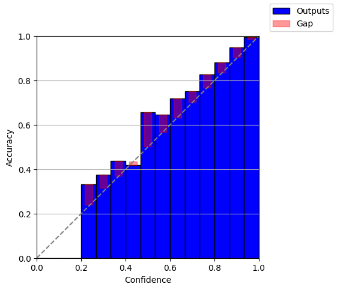
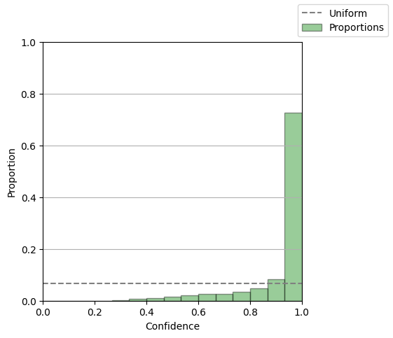

Laplace on MNIST¶
Setup data and model and train it¶
We start the tutorial by downloading and setting up a dataloader for MNIST. We will
use a simple flax.nnx model for the training. The data + model setup and training
closely follows the flax.nnx documentation to stress the flexible post-hoc abilities of laplax (and, of
course, Laplace Approximations in general).
from functools import partial
from itertools import islice
import jax
import jax.numpy as jnp
import optax
import torch
from flax import nnx
from plotting import create_proportion_diagram, create_reliability_diagram
from torch.utils.data import DataLoader
from torchvision import datasets, transforms
from laplax.curv import create_ggn_mv
from laplax.curv.cov import create_posterior_fn
from laplax.curv.ggn import create_ggn_mv_without_data
from laplax.eval import apply_fns, evaluate_metrics_on_generator, transfer_entry
from laplax.eval.metrics import (
calculate_bin_metrics,
correctness,
expected_calibration_error,
)
from laplax.eval.pushforward import (
lin_mc_pred_act,
lin_pred_mean,
lin_setup,
set_lin_pushforward,
)
from laplax.util.loader import DataLoaderMV, reduce_add
# Set the random seed for reproducibility
torch.manual_seed(0)
# Define constants
train_steps = 2200
eval_every = 200
train_batch_size = 32
val_batch_size = 32
# Define transforms
transform = transforms.Compose([
transforms.ToTensor(),
transforms.Normalize((0.1307,), (0.3081,)),
])
# Load MNIST datasets
train_dataset = datasets.MNIST(
root="data", train=True, download=True, transform=transform
)
test_dataset = datasets.MNIST(
root="data", train=False, download=True, transform=transform
)
# Create data loaders
def collate_fn(batch):
input, target = (
torch.stack([s[0] for s in batch]),
torch.tensor([s[1] for s in batch]),
)
return {"input": input.permute(0, 2, 3, 1).numpy(), "target": target.numpy()}
train_loader = DataLoader(
train_dataset,
batch_size=train_batch_size,
shuffle=True,
drop_last=True,
collate_fn=collate_fn,
num_workers=0,
pin_memory=torch.cuda.is_available(),
)
test_loader = DataLoader(
test_dataset,
batch_size=val_batch_size,
shuffle=False,
drop_last=True,
collate_fn=collate_fn,
num_workers=0,
pin_memory=torch.cuda.is_available(),
)
# Create training iterator that yields for exactly train_steps
train_iter = islice(train_loader, train_steps)
num_training_samples = len(train_dataset)
0%| | 0.00/9.91M [00:00<?, ?B/s]
1%| | 98.3k/9.91M [00:00<00:12, 771kB/s]
4%|▍ | 393k/9.91M [00:00<00:05, 1.70MB/s]
17%|█▋ | 1.64M/9.91M [00:00<00:01, 5.39MB/s]
30%|██▉ | 2.95M/9.91M [00:00<00:00, 7.30MB/s]
63%|██████▎ | 6.26M/9.91M [00:00<00:00, 14.0MB/s]
95%|█████████▍| 9.40M/9.91M [00:00<00:00, 17.6MB/s]
100%|██████████| 9.91M/9.91M [00:00<00:00, 12.9MB/s]
0%| | 0.00/28.9k [00:00<?, ?B/s]
100%|██████████| 28.9k/28.9k [00:00<00:00, 415kB/s]
0%| | 0.00/1.65M [00:00<?, ?B/s]
6%|▌ | 98.3k/1.65M [00:00<00:02, 697kB/s]
24%|██▍ | 393k/1.65M [00:00<00:00, 1.51MB/s]
97%|█████████▋| 1.61M/1.65M [00:00<00:00, 4.69MB/s]
100%|██████████| 1.65M/1.65M [00:00<00:00, 3.85MB/s]
0%| | 0.00/4.54k [00:00<?, ?B/s]
100%|██████████| 4.54k/4.54k [00:00<00:00, 15.8MB/s]
class CNN(nnx.Module):
"""A simple CNN model."""
def __init__(self, *, rngs: nnx.Rngs):
self.conv1 = nnx.Conv(1, 32, kernel_size=(3, 3), padding="VALID", rngs=rngs)
self.conv2 = nnx.Conv(32, 32, kernel_size=(3, 3), padding="VALID", rngs=rngs)
self.conv3 = nnx.Conv(32, 64, kernel_size=(3, 3), padding="VALID", rngs=rngs)
self.avg_pool1 = partial(nnx.avg_pool, window_shape=(2, 2), strides=(2, 2))
self.avg_pool2 = partial(nnx.avg_pool, window_shape=(3, 3), strides=(1, 1))
self.linear1 = nnx.Linear(64, 10, rngs=rngs)
def __call__(self, x):
x = self.avg_pool1(nnx.relu(self.conv1(x)))
x = self.avg_pool1(nnx.relu(self.conv2(x)))
x = self.avg_pool2(nnx.relu(self.conv3(x)))
x = x.flatten()
x = self.linear1(x)
return x
# Instantiate the model
model = CNN(rngs=nnx.Rngs(0))
# Create forward function with vmap
@nnx.vmap(in_axes=(None, 0), out_axes=0)
def forward(model: CNN, x):
return model(x)
# Visualize it
# nnx.display(model)
Setup optimizer¶
learning_rate = 3e-4
momentum = 0.9
optimizer = nnx.Optimizer(model, optax.adamw(learning_rate, momentum))
metrics = nnx.MultiMetric(
accuracy=nnx.metrics.Accuracy(),
loss=nnx.metrics.Average("loss"),
)
Setup training step functions¶
def loss_fn(model: CNN, batch):
logits = forward(model, batch["input"])
loss = optax.softmax_cross_entropy_with_integer_labels(
logits=logits, labels=batch["target"]
).mean()
return loss, logits
@nnx.jit
def train_step(model: CNN, optimizer: nnx.Optimizer, metrics: nnx.MultiMetric, batch):
"""Train for a single step."""
grad_fn = nnx.value_and_grad(loss_fn, has_aux=True)
(loss, logits), grads = grad_fn(model, batch)
metrics.update(loss=loss, logits=logits, labels=batch["target"]) # In-place updates
optimizer.update(grads) # In-place updates
@nnx.jit
def eval_step(model: CNN, metrics: nnx.MultiMetric, batch):
loss, logits = loss_fn(model, batch)
metrics.update(loss=loss, logits=logits, labels=batch["target"]) # In-place updates
Training the model¶
metrics_history = {
"train_loss": [],
"train_accuracy": [],
"test_loss": [],
"test_accuracy": [],
}
for step, batch in enumerate(train_iter):
# Run the optimization for one step and make a stateful update to the following:
# - The train state's model parameters
# - The optimizer state
# - The training loss and accuracy batch metrics
train_step(model, optimizer, metrics, batch)
if step > 0 and (step % eval_every == 0 or step == train_steps - 1):
# One training epoch has passed.
# Log the training metrics.
for metric, value in metrics.compute().items(): # Compute the metrics.
metrics_history[f"train_{metric}"].append(value) # Record the metrics.
metrics.reset() # Reset the metrics for the test set.
# Compute the metrics on the test set after each training epoch.
for test_batch in test_loader:
eval_step(model, metrics, test_batch)
# Log the test metrics.
for metric, value in metrics.compute().items():
metrics_history[f"test_{metric}"].append(value)
metrics.reset() # Reset the metrics for the next training epoch.
print(
f"[train] step: {step}, "
f"loss: {metrics_history['train_loss'][-1]}, "
f"accuracy: {metrics_history['train_accuracy'][-1] * 100}"
)
print(
f"[test] step: {step}, "
f"loss: {metrics_history['test_loss'][-1]}, "
f"accuracy: {metrics_history['test_accuracy'][-1] * 100}"
)
[train] step: 200, loss: 1.5579854249954224, accuracy: 55.876861572265625
[test] step: 200, loss: 0.7801689505577087, accuracy: 80.2784423828125
[train] step: 400, loss: 0.5933835506439209, accuracy: 84.0
[test] step: 400, loss: 0.4330975413322449, accuracy: 87.80047607421875
[train] step: 600, loss: 0.3991275429725647, accuracy: 88.609375
[test] step: 600, loss: 0.34466788172721863, accuracy: 89.56330108642578
[train] step: 800, loss: 0.3232867121696472, accuracy: 90.9375
[test] step: 800, loss: 0.27149900794029236, accuracy: 92.24759674072266
[train] step: 1000, loss: 0.29091233015060425, accuracy: 91.8125
[test] step: 1000, loss: 0.2618582844734192, accuracy: 92.61819458007812
[train] step: 1200, loss: 0.2643532454967499, accuracy: 92.765625
[test] step: 1200, loss: 0.23421761393547058, accuracy: 93.21914672851562
[train] step: 1400, loss: 0.22148150205612183, accuracy: 93.546875
[test] step: 1400, loss: 0.20629382133483887, accuracy: 94.04046630859375
[train] step: 1600, loss: 0.23098216950893402, accuracy: 93.515625
[test] step: 1600, loss: 0.19762158393859863, accuracy: 94.18069458007812
[train] step: 1800, loss: 0.21612083911895752, accuracy: 94.171875
[test] step: 1800, loss: 0.1793205738067627, accuracy: 94.98197174072266
Check model calibration¶
So far, we have followed along the standard MNIST tutorial from flax.nnx. Now, we
want to check the calibration of the model, i.e. whether the probabilities it assigns
to each class label represents its confidence. A good score for this is the ECE (see
e.g. Mucsányi2023).
%matplotlib inline
NUM_BINS = 15
# Collect predictions and targets from test dataset
all_predictions = []
all_targets = []
for batch in test_loader:
# Get predictions for this batch
predictions = jax.nn.softmax(forward(model, batch["input"]), axis=1)
all_predictions.append(predictions)
all_targets.append(batch["target"])
# Concatenate all batches
predictions = jnp.concatenate(all_predictions, axis=0)
targets = jnp.concatenate(all_targets, axis=0)
# Calculate confidence and correctness
max_prob = predictions.max(axis=-1)
correctness_float = correctness(pred=predictions, target=targets).astype(jnp.float32)
print(f"Accuracy: {correctness_float.mean():.4f}")
# Calculate bin metrics
bin_proportions, bin_confidences, bin_accuracies = calculate_bin_metrics(
confidence=max_prob, correctness=correctness_float, num_bins=NUM_BINS
)
# Plot the reliability diagram
create_reliability_diagram(
bin_confidences=bin_confidences,
bin_accuracies=bin_accuracies,
num_bins=NUM_BINS,
)
# Plot the proportion diagram
create_proportion_diagram(
bin_proportions=bin_proportions,
num_bins=NUM_BINS,
)
Accuracy: 0.9420

<Figure size 640x480 with 0 Axes>

<Figure size 640x480 with 0 Axes>
<Figure size 640x480 with 0 Axes>
Apply Laplace Approximation¶
First, we create the GGN matrix-vector product. As the GGN has 679,730,993,764 entries in this case, the naive representation of the dense matrix would take approximately 2.718 TB of VRAM. Therefore, it is crucial to represent this matrix-vector product implicitly, as shown below.
# Create GGN
graph_def, params = nnx.split(model)
def model_fn(input, params):
return nnx.call((graph_def, params))(input)[0]
train_batch = next(iter(train_loader))
ggn_mv = create_ggn_mv(
model_fn,
params,
train_batch,
loss_fn="cross_entropy",
num_total_samples=num_training_samples,
)
Alternatively, we can consider the ggn_mv over a dataloader instead of a single
training batch. To do so, the following cell needs to be commented out.
# Set maximum number of batches
class LimitedLoader:
"""DataLoader wrapper that limits the number of batches."""
def __init__(self, loader, max_batches):
self.loader = loader
self.max_batches = max_batches
def __iter__(self):
batch_iter = iter(self.loader)
for _ in range(self.max_batches):
yield next(batch_iter)
def __len__(self):
return self.max_batches
NUM_OF_BATCHES = 4
train_loader_limited = LimitedLoader(train_loader, NUM_OF_BATCHES)
# Setup batch-wise GGN-matrix-vector product
ggn_mv_wo_data = create_ggn_mv_without_data(
model_fn,
params,
loss_fn="cross_entropy",
factor=num_training_samples / (train_batch_size * NUM_OF_BATCHES),
)
# Setup ggn_mv with DataLoader
ggn_mv = DataLoaderMV(
ggn_mv_wo_data,
train_loader_limited,
transform=lambda x: x,
reduce=reduce_add,
verbose_logging=True, # Shows progress bar when iterating through data loader.
)
Callables such as to_dense, diagonal and wrap_function are lowered into the sum
of the DataLoaderMV. The cell below can be executed if the model above is made
sufficiently small such that the GGN fits into memory.
Note: For the remainder of the notebook, we assume an un-wrapped mv function.
# from laplax.util.flatten import create_pytree_flattener, wrap_function
# from laplax.util.mv import to_dense
# from laplax.util.tree import get_size
# flatten, unflatten = create_pytree_flattener(params)
# ggn_mv = wrap_function(ggn_mv, input_fn=unflatten, output_fn=flatten)
# arr = to_dense(ggn_mv, layout=get_size(params))
Next, we use the GGN matrix-vector product above to obtain a low-rank approximation of the GGN. Even though the dense GGN cannot be represented in memory, its low-rank approximation for a sufficiently low rank remains tractable to hold in memory. Having access to the low-rank GGN terms, we can then efficiently invert an isotropically dampened version of it which is the weight-space covariance matrix of our Laplace approximation.
# Create Posterior
posterior_fn = create_posterior_fn(
"lanczos",
mv=ggn_mv,
layout=params,
key=jax.random.key(0),
maxiter=100,
mv_jit=True, # If the loader has side effects, such as i/o operations, then
# this should be set to False.
)
Processing batches: 0%| | 0/4 [00:00<?, ?it/s]
Processing batches: 25%|██▌ | 1/4 [00:00<00:00, 7.91it/s]
Processing batches: 75%|███████▌ | 3/4 [00:00<00:00, 11.06it/s]
Processing batches: 100%|██████████| 4/4 [00:00<00:00, 11.27it/s]
Finally, we need a way to represent the model's uncertainty in its output space, as decisions (such as abstaining from prediction) are made based on the model output, not on the weight space.
prior_arguments = {"prior_prec": 10000.0}
pushforward_fns = [
lin_setup,
lin_pred_mean,
lin_mc_pred_act,
]
pushforward_fn = set_lin_pushforward(
model_fn=model_fn,
mean_params=params,
posterior_fn=posterior_fn,
prior_arguments=prior_arguments,
pushforward_fns=pushforward_fns,
key=jax.random.key(0),
num_samples=30,
)
# Set up two versions of the pushforward function - with and without vmap.
pushforward_fn_jit = jax.jit(pushforward_fn)
pushforward_fn_jit_vmap = jax.jit(jax.vmap(pushforward_fn))
# Define the metrics function (ideally with batch dimension)
def confidences_map(map_, **kwargs):
del kwargs
return jnp.max(jax.nn.softmax(map_, axis=-1), axis=-1)
def confidences_pred(pred_act, **kwargs):
del kwargs
return jnp.max(pred_act, axis=-1)
results = evaluate_metrics_on_generator(
pushforward_fn_jit,
test_loader,
metrics=[
transfer_entry(["pred_mean", "map", "mc_pred_act"]),
apply_fns(
confidences_map,
confidences_pred,
correctness,
names=["confidences_map", "confidences_pred", "correctness_map"],
map_="map",
pred_act="mc_pred_act",
pred="map",
target="target",
),
apply_fns(
correctness,
names=["correctness_pred"],
pred="mc_pred_act",
target="target",
),
],
reduce=jnp.concatenate,
vmap_over_data=True,
)
confidences_map_val = results["confidences_map"].astype(jnp.float32)
correctness_map_val = results["correctness_map"].astype(jnp.float32)
confidences_pred_val = results["confidences_pred"].astype(jnp.float32)
correctness_pred_val = results["correctness_pred"].astype(jnp.float32)
ece_map = expected_calibration_error(
confidence=confidences_map_val, correctness=correctness_map_val, num_bins=NUM_BINS
)
ece_pred = expected_calibration_error(
confidence=confidences_pred_val, correctness=correctness_pred_val, num_bins=NUM_BINS
)
print(f"MAP ECE: {ece_map:.4f}")
print(f"MAP acc: {correctness_map_val.mean():.4f}")
print(f"Laplace ECE: {ece_pred:.4f}")
print(f"Laplace acc: {correctness_pred_val.mean():.4f}")
MAP ECE: 0.0224
MAP acc: 0.9420
Laplace ECE: 0.0228
Laplace acc: 0.9421
If all functions (pushforward and metrics) support a batch dimension, then we can set
has_batch to False. Otherwise, has_batch=True will apply jax.lax.map along
the batch dimension.
results = evaluate_metrics_on_generator(
pushforward_fn_jit_vmap,
test_loader,
metrics=[
transfer_entry(["pred_mean", "map", "mc_pred_act"]),
apply_fns(
confidences_map,
confidences_pred,
correctness,
# correctness_pred_act,
names=[
"confidences_map",
"confidences_pred",
"correctness_map",
# "correctness_pred"
],
map_="map",
pred_act="mc_pred_act",
pred="map",
target="target",
),
apply_fns(
correctness,
names=["correctness_pred"],
pred="mc_pred_act",
target="target",
),
],
reduce=jnp.concatenate,
vmap_over_data=False,
# If all functions handle batch dimensions properly, then setting false works.
)
confidences_map_val = results["confidences_map"].astype(jnp.float32)
correctness_map_val = results["correctness_map"].astype(jnp.float32)
confidences_pred_val = results["confidences_pred"].astype(jnp.float32)
correctness_pred_val = results["correctness_pred"].astype(jnp.float32)
ece_map = expected_calibration_error(
confidence=confidences_map_val, correctness=correctness_map_val, num_bins=NUM_BINS
)
ece_pred = expected_calibration_error(
confidence=confidences_pred_val, correctness=correctness_pred_val, num_bins=NUM_BINS
)
print(f"MAP ECE: {ece_map:.4f}")
print(f"MAP acc: {correctness_map_val.mean():.4f}")
print(f"Laplace ECE: {ece_pred:.4f}")
print(f"Laplace acc: {correctness_pred_val.mean():.4f}")
MAP ECE: 0.0224
MAP acc: 0.9420
Laplace ECE: 0.0228
Laplace acc: 0.9421